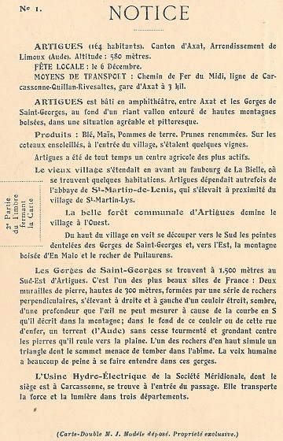
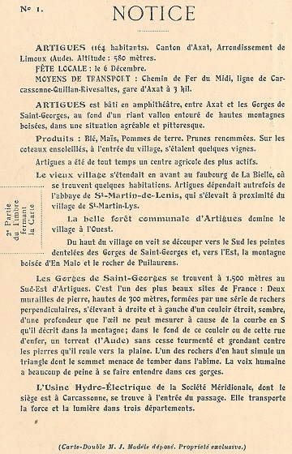

Cartes Postales des villages de la route des cols entre Rébenty et Aude - Artigues - Le Clat
Cartes postales proposées par Thierry Meynier sur son facebook et par le SESA sur son site
Artigues
Cartes Postales

 

Vues aériennes


Le Clat
Cartes Postales


Vues aériennes


Commentaires
Cliquer ici pour faire un Commentaire
Retour à l'accueil Précédent Suivant